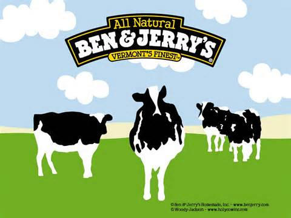

**SOS!!! WE NEED YOUR CONTRIBUTION TO SAVE EARTH FROM GLOBAL WARMING!**
Climate Change Animation Shows Devastating Effects
Published on Jun 12, 2014
Published on Jun 12, 2014
AJ+ animates the devastating effects on how climate change is already affecting every continent and every ocean on the planet, based on the most definitive report compiled by the United Nations. Hundreds of leading scientists from all over the world worked over 5 years researching the impacts and the challenges ahead for the UN Intergovernmental Panel on Climate Change.

Ben and Jerry Flavors We May Lose to Climate Change
Published on March 16, 2015
Climate change is causing havoc in weather systems around our world, as evidenced by record temperature swings last year. We’re concerned about this for a number of reasons, including the effect that climate change is already having on food production around the world.....Click Here for the Full Article